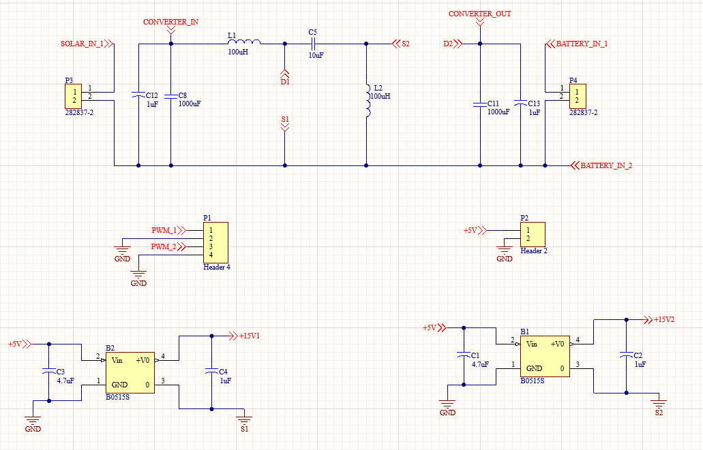
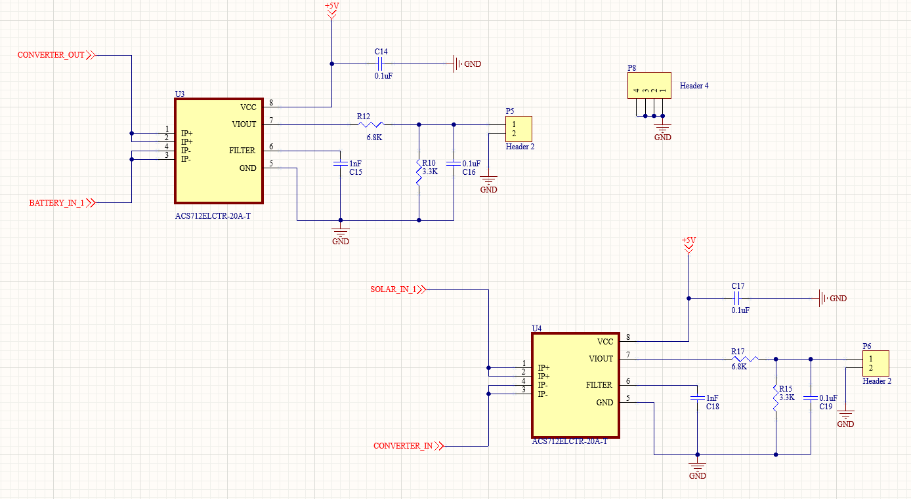
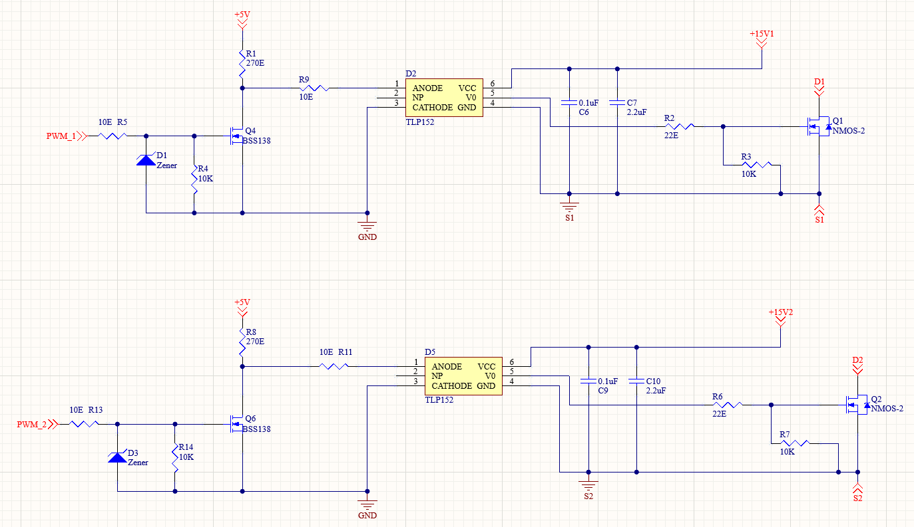
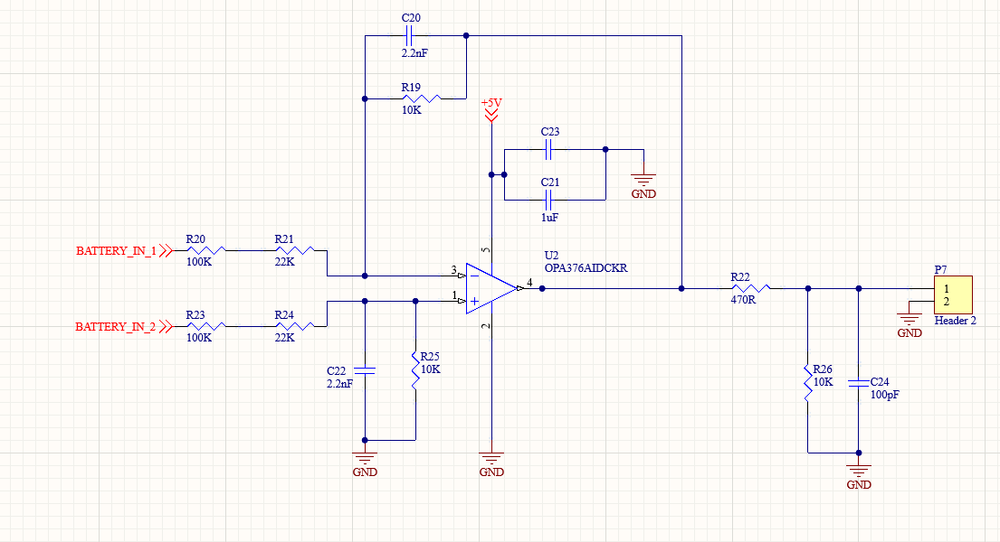
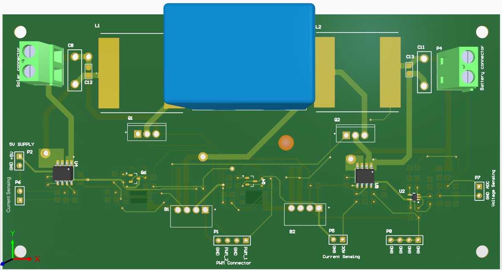
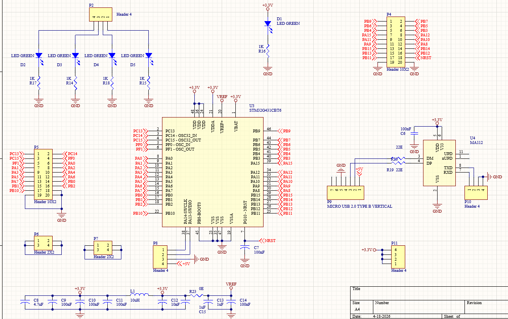

Projects
DC-DC Converter






Designed a high-efficiency SEPIC-Zeta converter using STM32 for renewable energy applications. Implemented control algorithms and developed a custom PCB for power conversion.
Digital Voltmeter

STM32-based voltage measurement system with ADC and OLED display.
Air Quality Monitoring System
Multi-sensor system for real-time environmental monitoring.